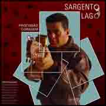

Eita, todo mundo já ajudou na divulgação, só faltava nóis.
Com certo atraso, replicamos então a última novidade musical da polícia, o lançamento do novo CD do sargento Lago, da PM de São Paulo. E vou até me abster de comentar, porque não pude ouvir ainda, e também porque a descrição do trabalho já ficou completa com o texto do próprio compositor em seu blog:As emoções da rotina policial são retratadas em suas canções. Ao completar 27 anos na Polícia Militar paulista, Sargento Lago - que trabalha na comunicação social - lança o CD “Profissão Coragem”, que presta tributo aos profissionais da segurança.É isso aí, a blogosfera policial é surpeendente justamente por esta variedade de conteúdo que consegue mostrar, e sempre atrelada à temática policial. É fantástico! ;)É o terceiro álbum do PM cantor, em produção independente, que contou com as participações de Dominguinhos “Somos a Polícia Militar”; Benito di Paula “Demodê”; Jair Rodrigues “Brasil - Homenagem a Geraldo Vandré”; Planta e Raiz “Sou Gambé” entre outros.
A canção título do CD, “Profissão Coragem”, provocou reações elogiosas de policiais militares, civis, guardas municipais entre outros.
Outra música que fez bastante sucesso, antes mesmo do CD ser lançado é “PM Boa de Bola”.
Se você está cansado das críticas que fazem a polícia, precisa ouvir o CD Profissão Coragem.
Contato do Sargento Lago: 11 – 8259 1412
Mais informações sobre vendas de CD e shows: www.sargentolago.com.br